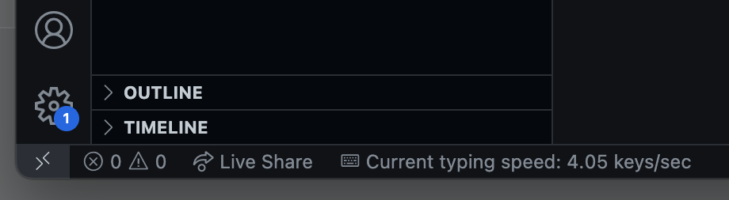
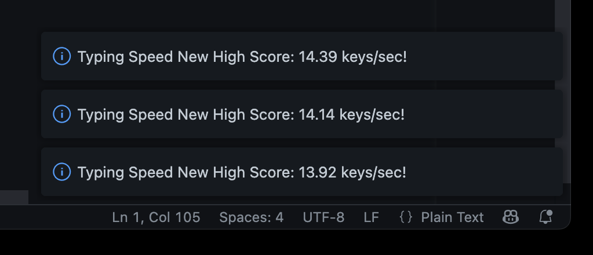
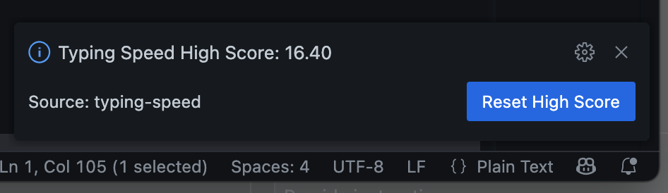

Track Your Typing Speed in VS Code
Developers are weird, we flex over random non-technical skills such as typing speed. Use this extension to track your typing speed and keystrokes in Visual Studio Code.
Also available on VS Code Marketplace
Features
Real-time Tracking
Counts keystrokes in the editor and shows both keystroke speed (keys/sec) and WPM in real-time
High Score System
Persists keystroke count and word count between sessions. Shows high scores for both keystroke speed and WPM
Check Your Progress
View your high scores with Ctrl+Alt+S, or by using the Command Palette. Reset scores when you want a fresh start
How It Works
Install & Start Typing
Install the extension and start typing in any editor window. The extension automatically counts your keystrokes per second and words per minute.
Watch Your Stats
Words are counted each time you type a space, tab, or press enter - indicating word completion. See your real-time stats in the status bar.
Beat Your Records
High scores for both keystroke speed and WPM are automatically saved! Break your own records and improve your typing skills.
Installation
VS Code Extension Manager
- Open VS Code
- Go to Extensions (Ctrl+Shift+X)
- Search for "typing speedometer" or "edvilme.typingspeedometer"
- Click Install
Command Line
code --install-extension edvilme.typingspeedometer
Quick Install
Install NowSettings
typingspeedometer.sessionTimeout
Timeout duration for typing sessions in milliseconds (default: 3000)